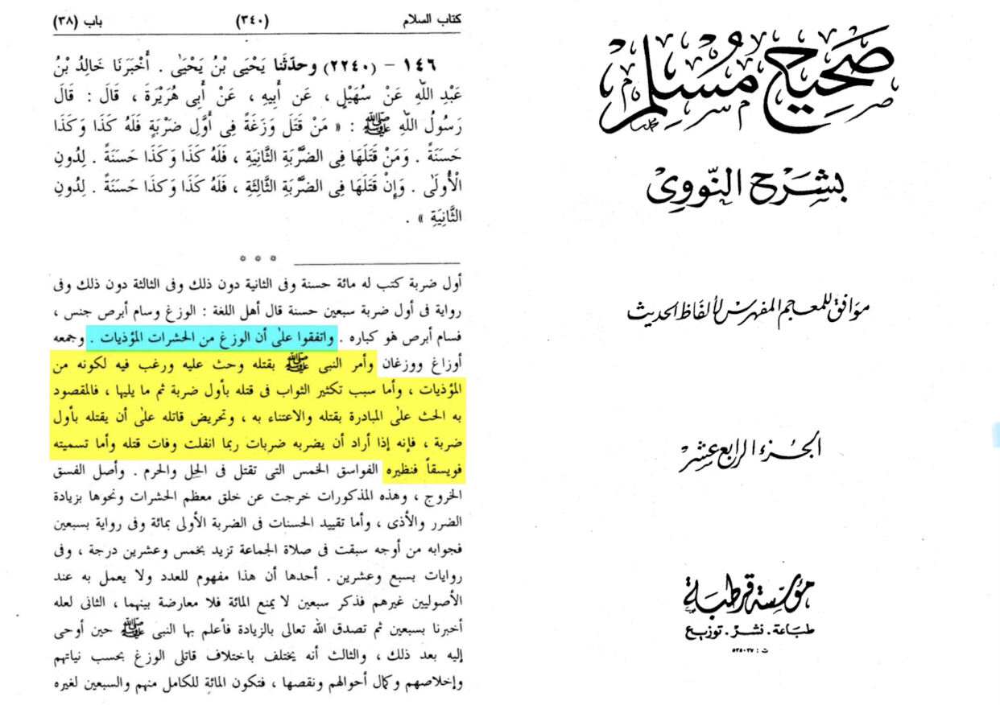

Imām an-Nawawī (d. 676 AH) writes in his commentary on muslim:
« and they agreed that geckos are from the animals which are dangerous. And the prophet ordered killing it because of it is harm, as for what has been in increasing the thawab (reward) it is to incite people to do it »
•📖 {Sharh Sahih muslim | 14/340}

The claim is that apparently the Prophet (saw) ordered the killing of geckos as punishment for the actions of their ancestors (blowing out the fire Ibraheem (as) was thrown in) or as encouragement of acts of cruelty
Imam al-Bukhari (Allah have mercy on him) narrates from Umm Sharik (Allah be pleased with her) that the Messenger of Allah (may Allah bless him and give him peace) instructed her to kill the gecko and said, “It used to blow on (the fire of) Ibrahim (peace be upon him).” [Bukhari; Muslim]
In reality, the encouragement of killing geckos is actually as a means to prevent the harm caused by them
ʻAamir ibn Saʻd reported from his father that the Prophet, sallallahu ʻalayhi wa sallam, “commanded killing the gecko, and he called it a Fuwaysiq (a little noxious creature).” [Al-Bukhaari and Muslim]
ʻUrwah narrated on the authority of ʻAa’ishah, may Allah be pleased with her: “The Prophet, sallallahu ʻalayhi wa sallam, said, ‘The gecko is a Fuwaysiq,’ and I did not hear him commanding to kill it. Saʻd ibn Abi Waqqaas claimed that the Prophet, sallallahu ʻalayhi wa sallam, commanded killing it.” [Al-Bukhaari]
An-Nawawi may Allaah have mercy upon him said, “The gecko was described as a little noxious creature. In this sense, it is similar to the five vicious creatures which should be killed even if the person is in a state of Ihraam (ritual consecration for Hajj or 'Umrah) because they exceed most insects and similar creatures in the harm and damage which they do.” [Sharh Muslim]
Imam An-Nawawi explained that the ulama agreed that lizards / geckos are small disturbing animals. Al-Munawi said that Allah ordered the killing of lizards / geckos because the animal had an ugly character
Ad-Dumayri said in Hayaat al-Haywaan al-Kubraa (2/546): “With regard to calling the wazagh a noxious little creature [fuwaysiq], it is similar to the five vermin [al-fawaasiq al-khams] that may be killed both outside and within the Haram zone. The root meaning of fisq [from which the word fuwaysiq (noxious little creature) is derived] is to drift away, and these creatures have drifted away from the characteristics of most other similar animals, because they cause much greater harm.”
Among the harms of this creature that were mentioned by the scholars, it spits into vessels, as a result of which man is exposed to a great deal of harm, as is stated in ‘Umdat al-Qaari (15/250).
It is venomous and spits out venom, and it transmits serious diseases to those with whom it lives.
An-Nawawi (may Allah have mercy on him) said, explaining the reason for killing it: The scholars are agreed that the wazagh comes under the heading of harmful vermin.
The Prophet (blessings and peace of Allah be upon him) enjoined killing it, and urged and encouraged people to do so, because it is harmful.
It was narrated from Saeed bin Al-Musayyab that:
a woman enter upon Aishah, and in her hand was an iron-footed stick. She said: "What is this?" she (Aishah) Said: "It is for these geckos, because the Prophet of Allah told us, that there was nothing that did not try to extinguish the fire for Ihram except for this animals, so he told us to kill it. And he forbade us to kill harmless snakes, except for the snake with two lines on its back, and the snake with a short tail, for the snatch away the eyesight and cause tat which is in women's wombs to be miscarried.
Sunan An Nasa’i 2831
The prophet forbidding the killing of harmless snakes is no doubt testament to the fact that he only permitted the killing of creatures that will cause active harm.
The Prophet (ﷺ) said, "Cover your utensils and tie your water skins, and close your doors and keep your children close to you at night, as the Jinns spread out at such time and snatch things away. When you go to bed, put out your lights, for the mischief-doer الْفُوَيْسِقَةَ (i.e. the rat) may drag away the wick of the candle and burn the dwellers of the house." Ata said, "The devils." (instead of the Jinns). (Sahih al-Bukhari)
If we interpret it as referring to the gecko by mischief doer or vermin:
'Amir b. Sa'd reported on the authority of his father that Allah's Apostle (ﷺ) commanded the killing of geckos, and he called them little noxious creatures فُوَيْسِقًا. (Sahih Muslim)
"Geckos are vermin. الْوَزَغُ الْفُوَيْسِق" (Sunan an-Nasa-i)
It was narrated from ‘Aishah that the Messenger of Allah (ﷺ) said concerning house lizards: “Vermin.” " الْفُوَيْسِقَةُ " (Sunan ibn Majah)
These narrations clearly indicate that it is recommended to kill the gecko, and the rationale is that the gecko is a harmful creature, just like the five vicious creatures (Fawaasiq) which should be killed as per the Shariah (rats, scorpions, crows, kites, and voracious dogs, as stated in the hadeeth).
No animals are evil in themselves. However, they can be dangerous and harmful. Therefore some animals are killed only when needed to protect themselves and others from their harm.
For this reason, the Messenger (may Allah bless him and give him peace) commanded the killing of the geckos and called them corrupt (fuwaysiqa).” [Muslim]
The word corrupt (fasiq) in Arabic literally means anything that goes beyond the bounds. Because it is poisonous, the Messenger (may Allah bless him and give him peace) called it fasiq or corrupt and encouraged killing it. [‘Ali Qari, Mirqat al-Mafatih]
Note that the permission and encouragement to kill these poisonous lizards applies whether the threat is actual or even potential.
Mulla ‘Ali Qari quotes Ibn al-Malak (Allah have mercy on them), saying, “One of its (the gecko’s) obsessions is to spoil food, especially salt. If it can’t get to the food to spoil it, it will climb on the ceiling and drop its droppings near it. Also, in this narration is an explanation that its nature is to cause harm.” [‘Ali Qari, Mirqat al-Mafatih]
These narrations clearly indicate that it is recommended to kill the gecko, and the rationale is that the gecko is a harmful creature, just like the five vicious creatures (Fawaasiq) which should be killed as per the Shariah (rats, scorpions, crows, kites, and voracious dogs, as stated in the hadeeth).
As for the saying in the Ahadeeth that it blew into the fire of Ibrahim -
The most likely sound view in this regard is that this version of the hadeeth is not authentically reported as a Marfoo’ hadeeth directly attributed to the Prophet, sallallahu ʻalayhi wa sallam. In fact, the statement: “It blew (into the fire) on Ibraaheem, may Allah exalt his mention ” was made by Ibn Jurayj, not by the Prophet, sallallahu 'alayi wa sallam. Although this statement was narrated as attributed to the Prophet in Hadeeth books other than the two Saheeh books, those narrations are not authentic.
Dr. Haakim Al-Mutayri, Professor of Hadeeth at Kuwait University, underlined that in detail in his online (Arabic) research paper which was published on the religious ruling on killing the gecko.
In any case, this version of the hadeeth does not contradict reason, as some weak-minded people, who are keen on challenging the ahaadeeth with their defective opinions, may argue. The only thing that needs investigating is whether these ahaadeeth are authentic or not, and not whether they contradict reason or not. Why would it not make sense that the gecko blew into the fire? Does this mean that if it were not for the gecko, the fire would not have been lit? No, the mere attempt of the gecko to light the fire is called “blowing into it”, even if it did not affect the ignition.
As for describing the gecko’s blowing into the fire of Ibraaheem as a metaphor, this is unlikely, and we did not find any mention of that in the statements of the scholars.
“It used to blow on (the fire of) Ibrahim (peace be upon him).” [Bukhari; Muslim]
In the commentary of this narration, Mulla ‘Ali Qari quotes al-Qadi ‘Iyad (Allah have mercy on them), saying, “This (final) statement indicates to the foulness of this type of gecko, its harms, and that it has reached such a level that it is was used by Shaytan to blow on the fire – which the ‘friend of Allah’ Ibrahim (peace be upon him) was thrown into – to make it burn more.” [‘Ali Qari, Mirqat al-Mafatih]
Sheikh Sami Al Majid states
“house geckos are known in Arabic by the name wazagh. It is a common household pest in the Middle East that lives on the walls and in the crevices of people’s homes.
The instruction to kill the wazagh is no different than the instruction to kill the scorpion, the poisonous snake, the mouse, and the feral dog that attacks people.
There is an authentic hadîth that mentions the killing of the “five serious pests” in both normal lands as well as in the sacred precincts, and they are the snake, the scorpion, the feral dog, the mouse, and the kite (a type of bird of prey). The reason these animals may be killed is because they are pests that cause harm to people when they make their homes in places of human habitation. These pests were known in Arabia to cause harm.
The instruction to kill the wazagh is for the same reason – it is a pest that poses harm to people. If a wazagh comes in contact with the skin, it can sometimes induce serious irritation. For this reason, it is also known to Arabs as sâmm abras (literally, “the leprosy venom”).
It is not killed because of its blowing on the fire kindled for Abraham (peace be upon him). When Prophet Muhammad (peace be upon him) informed us that the wazagh blew upon the fire of Abraham (peace be upon him) to help fan the flames, he was merely depicting the distastefulness of the animal and the extent of its harmfulness. He was merely characterizing this species as an unpleasant one.
As for the question of what sin is upon the wazaghs of today so that all of them should be punished for the act of a single wazagh of antiquity, we say that this is not the case at all. We are instructed to kill the wazagh simply because it is a harmful household pest, since it irritates people’s skin and it also forces people to discard the food that it comes in contact with. This is the reason why it should be killed, to preserve the comfort and cleanliness of places of human habitation, and not because of any sin of some past wazagh.”
Its description as having blown into the fire of Ibrahim and being the only animal to do so is merely testament to the harm pervaded by geckos, and not the reason as to why it is desirable for them to be eliminated.
Ash-Shirwaani (may Allah have mercy on him) [a Shaafa‘i scholar] said:
That is, because its ancestor was the one who blew onto the fire, which affirms the evil nature of this type of creature, by way of honouring Ibraaheem.
End quote from Haashiyat Tuhfat al-Muhtaaj (9/383).
And yet, the rectitude of Islam is demonstrated through this despite it being an order to eliminate geckos. We are not allowed to kill them painfully, not are we allowed to kill them for sport. We only kill them for the harm they carry.
Sahih Muslim 1955 a
Shaddid b. Aus said:
Two are the things which I remember Allah's Messenger (ﷺ) having said: Verily Allah has enjoined goodness to everything; so when you kill, kill in a good way and when you slaughter, slaughter in a good way. So every one of you should sharpen his knife, and let the slaughtered animal die comfortably.
It says in a hadeeth which was narrated from Ibn ‘Abbaas that the Messenger of Allaah (peace and blessings of Allaah be upon him) said: “Do not use anything in which there is a soul as a target.” (Narrated by Muslim, 1957)
It was narrated that Hisham bin Zaid said; "Ans and I entered upon Al-Hakam - that it, Ibn Ayyb - and there were some people shooting at a chicken in the house of the governor. He said: 'The Messenger of Allah forbade using animals as targets;'.. (Narrated by al-Bukhari)
Abu Hurayra reported Allah's Messenger (ﷺ) as saying: He who killed a gecko with the first stroke for him is such and such a reward, and he who killed it with a second stroke for him is such and such reward less than the first one, and he who killed it with the third stroke for him is such and such a reward less than the second one.
This Hadith has been reported on the authority of Abu Hurayra through another chain of transmitters (and the words are): - He who killed a gecko with the first stroke for him are ordained one hundred virtues, and with the second one less than that and with the third one less than that.
Abu Hurayra reported Allah's Messenger (ﷺ) as saying (that he who kills a gecko) with the first stroke there are seventy rewards for him.
Killing it in one stroke / immediately without causing it pain is what gets you virtue
————
As for the claim that the Prophet ordained the killing of geckos simply because he disliked small scuttly creatures such as them, and him ordering to kill them has no basis behind it - to this we say, why then, did he forbid the killing of frogs as well, on top of harmless snakes?
Frogs and geckos are similar in stature, size, texture, etc
Prophet Muhammad (peace be upon him) called NOT TO KILL even a FROG and he said, “Its croaking is tasbeeh (praising Allah).”
{Narrated by An-Nas’ai}
In another Hadith , Hazrat Abdur Rahman ibn Uthman (Radiyallahu Anhu) reported that When a physician consulted the Prophet (peace be upon him) about putting FROGS in medicine, HE FORBADE HIM TO KILL THEM. {Sunan Abu Dawud 3871, narrated by (Imam) Abi Dawood with a Hasan chain, and by (Imam) al-Nasai with a Sahih chain}
————
In short, they are killed for the harm they bring, and are killed in one strike (mercifully) in order to not cause them pain whilst simultaneously assuaging us humans from being subject to the harm they carry.
They are NOT killed for ‘crimes of their ancestors’.